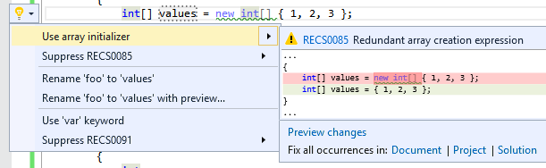
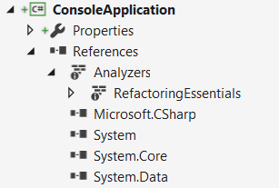

Analyzers
Roslyn, the open source compiler for C# and Visual Basic, introduced the possibility to add new warnings and errors to the build via Analyzers.
Visual Studio 2015 and Visual Studio Code present them visually and also allow Code Fixes: Automated actions to fix a specific warning or error.

While analyzers can be installed from the Visual Studio Extension Gallery, for them to be used in command line builds and shared by all developers they must be installed as NuGet packages for each project.
Each package can either contain only analyzers or analyzers along with other files, allowing a library to include automated migration from now-obsolete constructs or warnings on incorrect usage.
Referencing analyzers
When a NuGet package containing analyzers is added to a
paket.references file, Paket will automatically
install the analyzers in the corresponding projects.

Analyzers are only supported by Roslyn-based compilers. Other versions will ignore them.
Conventions for NuGet packages
Analyzers created by the "Analyzer with Code Fix" template are currently
installed via Install.ps1 in Visual Studio that Paket
doesn't support.
For analyzers to work in Paket they need to be placed in specific directories inside the NuGet package.
The structure looks like this:
|
The general structure is:
|
This structure is the one generated by the "Analyzer with Code Fix" template and
conforms to the
documented convention
for analyzers to be installed by NuGet in project.json-based projects.
If the <language></language> is absent from the path the analyzer will be
installed in any supported project type (.csproj, .vbproj, .fsproj and .pyproj).
If it is present the analyzer will only be installed in the corresponding
project type:
cs->.csprojvb->.vbprojfs->.fsprojpy->.pyproj
Remarks:
- There is currently no way to create analyzers for F#.
-
The
dotnetpart of the path is in fact the host platform that is targeted. The only one currently in existence is the Roslyn compiler and it requires thedotnetframework. - The Roslyn developers maintain some analyzers under the roslyn-analyzers project but others have started to appear like Refactoring Essentials or Code Cracker.